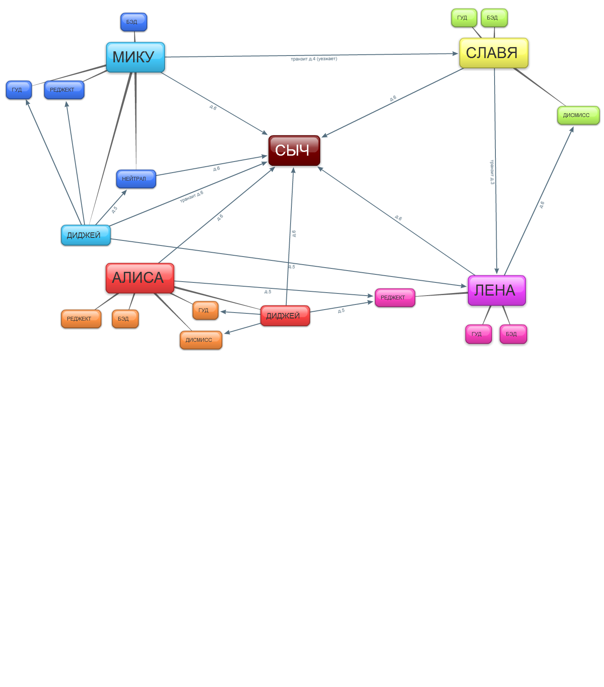

О транзитах между рутами
Страница 1 из 4 • 1, 2, 3, 4 
О транзитах между рутами
автор Arlien в Пт 12 Сен 2014 - 22:06
В первую очередь, краткая вводная на всякий случай(спойлера инклудед):
На данный момент нам представлено два транзитных хаба.
Первый, sl2un - в третьем дне, завтракаем со Славяной, соглашаемся помочь на пляже, поддаемся Унылке. Это не столько полноценная смена рута, сколько метод конверсии лав поентов, но тем не менее.
Второй, mi2sl - в четвертом дне 7ДЛ-рута Мику. Идем помогать Славяне (опять), не слишком усердно ликвидируем неловкую сцену, потом не слишком усердствуем в ликвидации ее последствий и готово дело.
Во вторую очередь, мое ИМХО по фиче в целом:
Фича отличная и нужная.
Рассчитывали на уняня с няшей-стесняшей, а получили Гитлера в юбке?
Болтушка-хохотушка оказалась мажором-мизантропом?
Больше нет сил терпеть загоны ранимой бунтарки?
Хотели тепла и ламповости, а получили разврат и бл*дство?
Плюйте им в харю чернилами! Удирайте зигзагом с воплями "ОЛОЛО ПОСОНЫ Я ЛИВАЮ!!11"! Только в 7ДЛ от 7ДЛ-куна!
Ну а если серьезно, то давным-давно, в далекой-далекой галактике, когда Арли самый первый раз проходил ванильное БЛ, он, как водится, сначала шел без прицела на концовки и без ФЧ, просто играл свою историю. Сначала погулял малость с Унылкой, но когда она начала отмораживаться, понял, что лимит отморозков на кв.м. трещит по швам, и спрыгнул. В итоге получил бэд Славяны без вариантов и довольно фейловое прохождение в целом. И, полагаю, такие ситуации возникали не только лишь у меня.
Так что возможность своевременно соскочить с рута, пришедшегося не по душе - это очень хорошая, важная для приятного прохождения и смелая задумка.
И в третью очередь - сомнения:
На данный момент оба транзит-хаба построены по примерно одному лекалу. Создается двусмысленная ситуация, мы читательским выбором даем Семену карт-бланш на малодушие, у бедняги падает мораль и в итоге, если мы читательским авторитетом не задействуем аварийный режим на ранее запасенных ЛП и карме, он успешно вылетает из рута (или из Совенка). Тут все хорошо, написано сильно, поведение логично, но!
Ровно до момента $ lp_A=lp_B, $ lp_B=0.
Семен совершенно логично, в своем духе и в силу объективных обстоятельств покидает рут.
У Семена есть все причины катапультироваться. У него есть причины вылететь на нуарный (или обычный) сыч-рут и оставшиеся дни в лагере оплакивать свою никчемность, если профуканных ЛП было много. Если профуканных ЛП было мало, он вполне может с окейфейсом сказать "Это печально" и уйти наслаждаться жизнью в рут дружбы, СССР и электроники.
Но! ИМХО, у него катастрофически мало объективных причин и объявленной мотивации для перехода именно на рут другой девчонки! Да, они обозначены в общих чертах, а ля "бери что дают", но это, на мой вкус, больше похоже на техническую заглушку, чем на мотивацию.
Семен мог просто игнорить Унылку все два с половиной дня до пляжа и не думать о ней от слова "вообще", но тем не менее, попасть на ее рут просто по факту провала/отказа от своей исходной романтик-линии! Просто потому, что читателю так захотелось.
С Мику все еще серьезней, так как с ней дела зашли существенно дальше. Сем романсит ее без устали, а потом вдруг ХЛОП так - "Та все что мне нужно, уже тут!", и под ручку со Славяной в закат.
Такие вот мои соображения.
Перед тем, как начинать фонтанировать идеями по оптимизации этого момента, хочу проконсультироваться с товарищем автором и общественностью. Как вы считаете, есть ли тут проблема или это все же вкусовщина?
Arlien- Людовед

- Сообщения : 1322
Дата регистрации : 2014-09-08
Re: О транзитах между рутами
автор Гость в Пт 12 Сен 2014 - 22:27
Возможность спрыгнуть с рута на дружбу или сыча просто не реализована (я об этом уже писал в другой ветке), но сделать её просто и логично, а вот смена рутов девочек вообще пошита белыми нитками.
Предложение: смена рута возможна только в том случае, если у объекта смены будет достаточно ЛП (а как ещё реализовать-то?)
Пример:
Вводная: у Слави ЛП+10, у Алисы +8 У Лены +2.
Тогда на пляже вместо Лены должна быть Алиса. Вот это уже логично.
Гость- Гость
Re: О транзитах между рутами
автор Ingvar в Пт 12 Сен 2014 - 22:30
Ingvar- Сыч

- Сообщения : 63
Дата регистрации : 2014-09-07
Возраст : 39
Откуда : Санкт-Петербург
Re: О транзитах между рутами
автор Гость в Пт 12 Сен 2014 - 22:36
Ingvar пишет:Да ладно, кажется считается, что, например, Лена влюблена в Семена вне зависимости от лп (даже если он ее игнорит по максимуму) - иначе, я подозреваю, сюжетная линия Мику-рута распадется.
Прощай, логика!!! К черту смысл!!! Хотя, вы правы. У меня было -5 ЛП Лены, но "интимчик" таки состоялся. Автор объяснил это тем, что "не все зависит от проклятых ЛП". До сих пор не понял глубины смысла этой фразы.
Гость- Гость
Re: О транзитах между рутами
автор Arlien в Пт 12 Сен 2014 - 22:39
Неверная мера, кмк. Алиса - это все же не Лена, и будет очень странно, если настолько разные персонажи начнут действовать в одно и то же время в одном же месте плюс-минус схожими методами.на пляже вместо Лены должна быть Алиса
ИМХО универсального хаба "поменяй рут" быть не должно - девчонки-то все разные, и время раскачки у них разное, и модус операнди, и всякие прочие вводные.
Верно, но проблема и не в Лене, проблема в Семене. Унылка-то может и влюблена, а Сему должно быть здорово не с руки выходить на рут 'коварной стервы, погубившей его чистую и невинную любовь'.Лена влюблена в Семена вне зависимости от лп
Arlien- Людовед
- Сообщения : 1322
Дата регистрации : 2014-09-08
Re: О транзитах между рутами
автор Ingvar в Пт 12 Сен 2014 - 22:44
Ingvar- Сыч
- Сообщения : 63
Дата регистрации : 2014-09-07
Возраст : 39
Откуда : Санкт-Петербург
Re: О транзитах между рутами
автор peregarrett в Пт 12 Сен 2014 - 22:51

Да, девушки не взаимозаменяемые, так что бедному 7дл-куну придётся предусмотреть пути перехода с каждого на каждый рут - всего каких-то двадцать развилок, всего-то

peregarrett- Находка для шпиона

- Сообщения : 3264
Дата регистрации : 2014-09-07
Возраст : 36
Re: О транзитах между рутами
автор Гость в Пт 12 Сен 2014 - 22:53
Я не предлагаю менять в сцене на пляже Лену на Алису. Просто в таком случае должно быть другое событие. Ну, к примеру, Семен становится свидетелем того, что Славя наезжает на Алису (ага, бульдозером) и он может выбрать кого поддержать.
Гость- Гость
Re: О транзитах между рутами
автор Arlien в Пт 12 Сен 2014 - 23:02
Ну-у-у, сомневаюсь, что для этого есть предпосылки. Как вот, к примеру, Алиса со всеми ее тараканами вообще должна решиться кого-то у кого-то отбивать? Ладно еще у Унылки, может и раскачается как-нибудь, если ей Сема западет в сердце. А если он с активисткой-Славей водится?.. это ж нипапанятиям! Порыдает в подушку максимум, но решительные меры предпримет сильно вряд ли.пути перехода с каждого на каждый рут
Arlien- Людовед
- Сообщения : 1322
Дата регистрации : 2014-09-08
Re: О транзитах между рутами
автор Гость в Пт 12 Сен 2014 - 23:10
Далее. На счет Алисы. Я как раз и предложил выше вариант того, как можно прыгнуть на неё со Слави. То есть если у Алисы много ЛП (переводя на человеческий - она чувствует заинтересованность Семена) и он ещё её защитил перед Славей (вроде как его девушкой), то... почему бы и нет?
Гость- Гость
Re: О транзитах между рутами
автор peregarrett в Сб 13 Сен 2014 - 0:50
Лена готова выцепить Семена из лап любой девушки (возможно кроме Алисы), но если мало ЛП, то после выцепления все равно все катится в ебеня. На каждом руте придётся делать перепрыг на Лена-рут.
Алиса скорее всего объедками питаться не будет из гордости. На нее перепрыгиваний не нужно, ну кроме диджейства разве что.
Славя при случае может попытаться отбить, но оставляет основной выбор за Семеном. Чтоб перепрыгнуть на Славя-рут, надо иметь приличный ЛП и сделать правильные выборы в нескольких точках, иначе сваливаешься в сычевание. Наверно проще будет сделать эту развилка одинаковой для всех рутов.
Мику - с ней пока неясно. Она сама тот ещё сыч, хотя может попытаться отбить у Лены. Типа "Ой, а Лена куда-то ушла, а ты мне не поможешь в клубе рояль переставить, а хочешь послушать как я пою"
Ну и финалом, Ульяна просто от скуки будет хотеть вернуть себе товарища по проказам и будет подстраивать сюрпризы в те моменты, когда у Семена романтик эвент. Ну кроме Алисы, ее она одобряет
Как-то так.
peregarrett- Находка для шпиона
- Сообщения : 3264
Дата регистрации : 2014-09-07
Возраст : 36
Re: О транзитах между рутами
автор Гость в Сб 13 Сен 2014 - 0:57
По Алисе: не будьте так категоричны. прыжок на неё можно сделать, я выше писал как.
По Славе. Я понимаю, что она... э... многим тут дорога, но в данном случае я думаю можно немного показать её истинное лицо и прописать какую-нибудь многоходовку в её исполнении, целью которой будет отбитие Семена. Попадется или нет - на выбор игрока. Тут же можно и бэдэнд Слави привязать:
... -Ты меня обманула!!! Алиса/Лена/Мику/ОД была честной девушкой!!! Как ты могла, Славя?
- Легко! МВА-ХА-ХА-ХА!!!
Гость- Гость
Re: О транзитах между рутами
автор peregarrett в Сб 13 Сен 2014 - 1:07
С Алисой все-таки не думаю. Семен её вон с первого дня обхаживает, чтоб сквозь ее броню пробраться, а тут всего-то помощь... Ничего серьезнее дружбы в этом случае ему не светит, да и то вряд ли. Не поверит она ему, если Семен сначала вокруг Слави увивался, а потом внезапно Славю послал и на неё переключился. Диджей-рут в этом плане выглядит правдоподобнее - деловые отношения в рамках её увлечений, все понятно.
Ну на крайний случай она может кавалера у Мику увести. Просто потому что не воспринимает её всерьёз.
peregarrett- Находка для шпиона
- Сообщения : 3264
Дата регистрации : 2014-09-07
Возраст : 36
Re: О транзитах между рутами
автор Гость в Сб 13 Сен 2014 - 1:09
Ага, так и вижу Лену, размахивающую саблей:
- Падхади по одному! Всех убью - одна останусь!
Гость- Гость
Re: О транзитах между рутами
автор peregarrett в Сб 13 Сен 2014 - 1:17
Ну и она скорее скажет "-ну ты ж меня выбрал, значит было за что. И вообще, у нас брачная ночь или дискуссия? Лезь сюда быстро!
peregarrett- Находка для шпиона
- Сообщения : 3264
Дата регистрации : 2014-09-07
Возраст : 36
Re: О транзитах между рутами
автор Гость в Сб 13 Сен 2014 - 1:26
На счет активно отбивать. Автор, похоже, взял за аксиому, что все героини усиленно вешаются Семену на шею (Кроме Алисы. И это хорошо). Следовательно, при изрядном количестве ЛП у Слави она вполне может выдать что-то такое, что я описал.
Гость- Гость
Re: О транзитах между рутами
автор Гость в Сб 13 Сен 2014 - 1:42
Гость- Гость
Re: О транзитах между рутами
автор Гость в Сб 13 Сен 2014 - 1:50
Гость- Гость
Re: О транзитах между рутами
автор peregarrett в Сб 13 Сен 2014 - 1:52
Лена не будет убивать всех, только соперницу, и то не специально. Сначала она придёт выяснить отношения, а потом у неё планка упадёт - и кровища! Придёт в себя, поймёт что наделала и чирк себе по горлу.
В общем, все умерли.
Понятное дело, все перепрыгивать с учётом ЛП. Кроме Лены, ну тут уж автор настаивает
peregarrett- Находка для шпиона
- Сообщения : 3264
Дата регистрации : 2014-09-07
Возраст : 36
Re: О транзитах между рутами
автор Гость в Сб 13 Сен 2014 - 1:57
Лена vs Мику (психоз против кунг фу),
Лена vs Алиса (психоз против гоп-стайл стрит файдинг),
Лена vs Славя (психоз потив колхоза).
Варианты выбора Семена: разнять / наблюдать, делать ставки. Вот это уже интересно.
Гость- Гость
Re: О транзитах между рутами
автор Гость в Сб 13 Сен 2014 - 2:03
Гость- Гость
Re: О транзитах между рутами
автор peregarrett в Сб 13 Сен 2014 - 2:05
Лена на многое способна ради любви. Сколько она любовных романов прочла, не пересесть, а в силу социофобии принимает их за чистую монету. Вполне в её духе, короче.
Вы совершенно не понимаете сути ламповости, товарищ Дельта.
peregarrett- Находка для шпиона
- Сообщения : 3264
Дата регистрации : 2014-09-07
Возраст : 36
Re: О транзитах между рутами
автор Гость в Сб 13 Сен 2014 - 2:06
С рессорой - просто потрясающая идея!!!
Гость- Гость
Re: О транзитах между рутами
автор Admin в Сб 13 Сен 2014 - 2:08

Транзит-хабы приписаны четвёртому-пятому дню.
Шестой день - транзит на сыч-хаб
Девочек, обладающих дисмисс-концовкой, бросить архитрудно:
Славю можно флипнуть с Унылкой только до выхода на рут
Алису можно флипнуть только на отыгрыше диджея и классик-руте.
Конверсия лп пока остаётся неизменной - до тех пор, пока не будет устаканен порядок выхода на концовки. Сейчас он выглядит так:
1. Хорошая карма (кроме Лены) + много лп = гуд
2. Плохая карма(транзит очень много кусает) + много лп = реджект (у Слави дисмисс)
3. Хорошая карма + мало лп = дисмисс/нейтрал (у Лены реджект)
4. Плохая карма + мало лп = бэд
Что мне видится довольно дырявой моделью.
Admin- Admin
- Сообщения : 84
Дата регистрации : 2014-09-06
Re: О транзитах между рутами
автор Arlien в Сб 13 Сен 2014 - 2:11
Основная проблема - она все же не в девочках. Их мысли от нас скрыты, что дает большое пространство для маневра и трактовок.
Проблема в Семене, чьи размышления у нас на виду и которые плохо стыкуются с возможными действиями.
ИМХО не следует городить дополнительные сцены - мод и так чертовски сложен с архитектурной точки зрения.
Довольно было бы и опциональных линейных блоков текста непосредственно перед сменой рута (где-то между провокационной ситуацией и развязкой ситуации), где бы Семен Семеныч неким образом начинал бы сомневаться в романсимой им до сих пор тян. Для амортизации, тксзть, афтершока.
P.S. Ушел медитировать над схемой и познавать совиный дзен.
Последний раз редактировалось: Arlien (Сб 13 Сен 2014 - 2:16), всего редактировалось 1 раз(а)
Arlien- Людовед
- Сообщения : 1322
Дата регистрации : 2014-09-08
Страница 1 из 4 • 1, 2, 3, 4